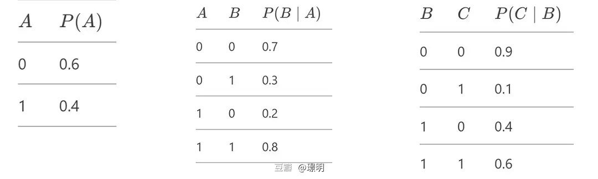

I often feel that some concepts that are actually quite easy to explain are given intimidating names that scare off newcomers. Take Euclidean Distance and Manhattan Distance, for example.
In 2D, Euclidean Distance is just straight-line distance:
d = sqrt((x₁ − x₂)² + (y₁ − y₂)²)
Manhattan Distance is the sum of absolute coordinate differences:
d = |x₁ − x₂| + |y₁ − y₂|
The name "Manhattan" refers to grid-like city streets — you can only walk vertically and horizontally, not diagonally. But if that’s the logic, shouldn't it also be called "Tokyo Distance"? Or "Chang’an Distance" from ancient China? After all, that city had a grid layout centuries ago.
My philosophy: good knowledge should be understandable without requiring irrelevant background. The best physics or math should be explainable to kids. Since we live in a world of complicated names, let's do our best to unpack them.
This article starts with the Monte Carlo method and then explores four Monte Carlo variants for sampling-based inference in Bayesian Networks.
Don't be scared by the name! Even if you've never heard of it, you've probably used the idea intuitively many times.
Monte Carlo methods involve generating lots of random samples and using their statistical properties (like frequency or average) to approximate a probability or expectation.
For example, to estimate P(A|B), we use:
P(A|B) ≈ count(A,B) / count(B)
Imagine you don’t know the probability of flipping heads. Just flip a coin n times, count how many heads (say h), and estimate P(heads) ≈ h/n. If n is large, this is a good approximation.
Let's take a simple Bayesian network: A → B → C, with each node taking values 0 or 1.
Given: P(A), P(B|A), and P(C|B)
Problem: What is P(A=1 | C=1)?
Using the chain rule:
P(A=1 | C=1) = P(A=1, C=1) / P(C=1)
= Σ_B P(A=1, B, C=1) / Σ_A Σ_B P(A, B, C=1)
= Σ_B P(A=1) * P(B|A=1) * P(C=1|B)
/ Σ_A Σ_B P(A) * P(B|A) * P(C=1|B)
This works, but let's look at the complexity:
If we have n nodes and k values per node, this is roughly O(kⁿ) — exponential!
With loops or complex topologies, exact inference becomes impractical.
Sampling methods make inference more feasible. All of the following use Monte Carlo-style sampling:
Let’s work with this example again:
A → B → C (all binary)
Known probabilities:
Target: P(A=1 | B=1). B=1 is our evidence.
- Randomly generate values using uniform samples [0,1]
- Based on probability tables, sample A, then B based on A, then C based on B
- Repeat many times
- Estimate: P(A=1 | B=1) = count(A=1,B=1) / count(B=1)
Same as Prior Sampling, but reject samples where B ≠ 1.
Saves work by skipping unnecessary samples.
- Instead of rejecting samples, always force evidence to match (set B=1)
- Assign a weight W = P(B=1|A) for each sample
- Estimate: P(A=1|B=1) ≈ Σ(weighted A=1 samples) / Σ(all weights)
- Use Markov Chain Monte Carlo (MCMC) to iterate
- Start with a random full assignment like [A=0, B=1, C=0] (B fixed)
- Iteratively resample one variable at a time using conditional distributions
- After many iterations, the samples approximate the true distribution
If you remember just one thing: Monte Carlo is just statistics approximating probability. When Bayesian networks become too hard to compute exactly — just sample!